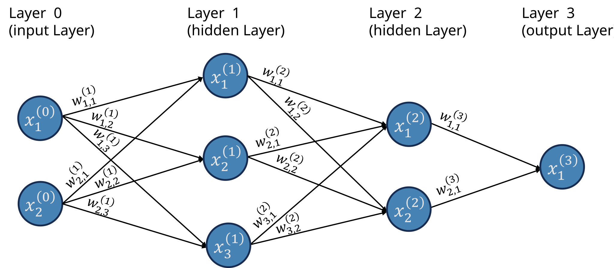
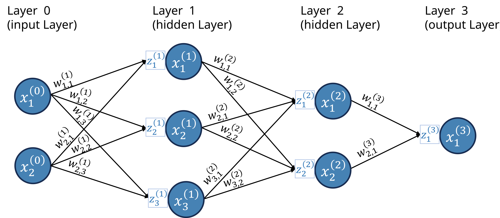
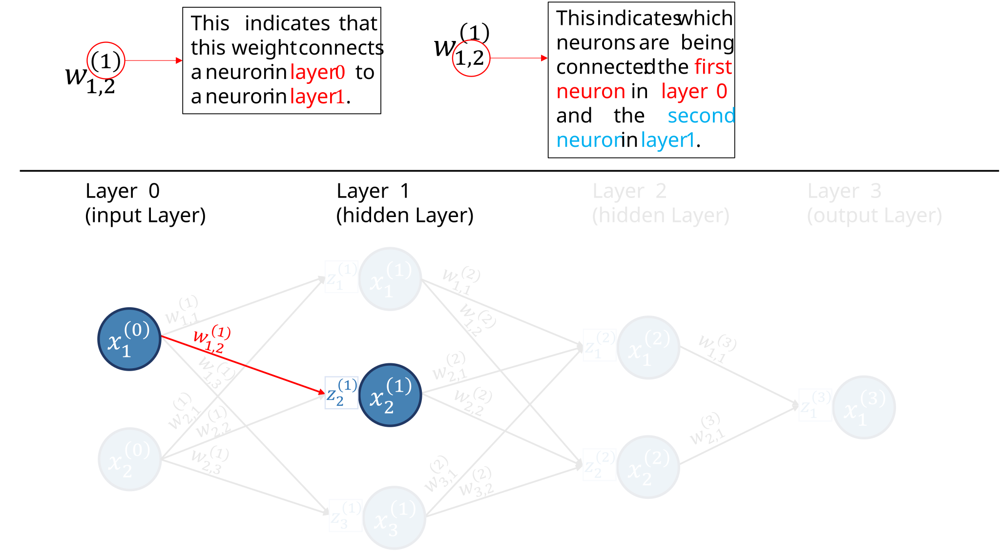
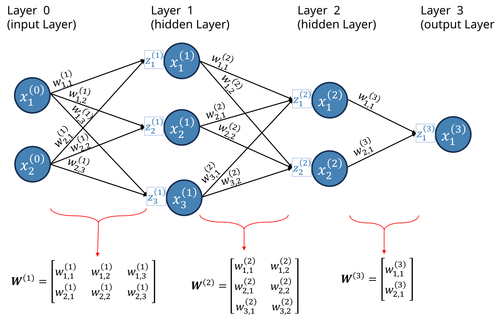
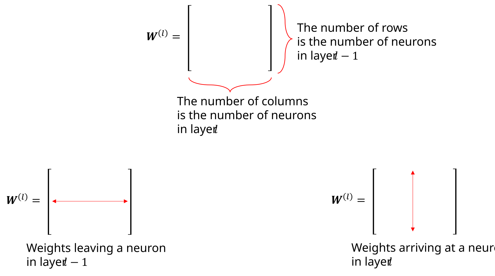
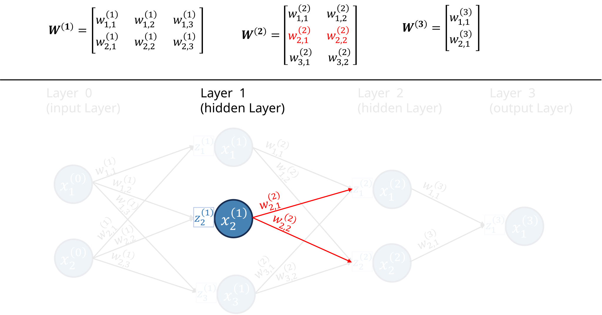
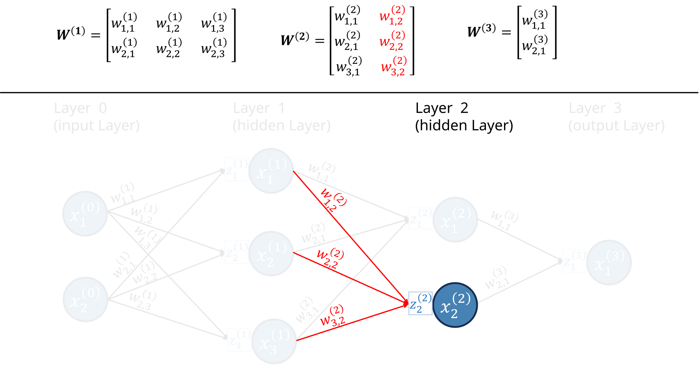

Feed Forward Neural Network
Learning Objectives:
At the end of this tutorial, the reader should be able to:
- Calculate the forward pass of a neural network;
- Calculate the backpropagation of a neural network;
- Implement a neural network from scratch in Python;
- Implement a neural network using PyTorch;
Prerequisites:
It is assumed that the reader :
- possesses a level of proficiency in computing derivatives, particularly in the application of the Chain Rule.
- has some Python knowledge;
- is able to perform matrix multiplication;
In this tutorial, we will explore how feedforward neural networks work. We’ll discuss neurons, layers, activation functions, and cost functions. Then, we’ll see in detail how we train a neural network using backpropagation. We will derive the backpropagation formulae step-by-step and implement a neural network from scratch using Python’s Numpy package only.
We will need a neuron network diagram to help illustrate the steps of creating and training a neural network. If this is not the first post you’ve read about neural networks, you may have seen the diagram below.

When I started learning about neural networks, I found the standard diagram confusing because it doesn’t explicitly show a crucial component needed for the backpropagation algorithm. Therefore, for this tutorial, we will explicitly include this component to the diagram, as shown in Figure 2.

Let’s introduce some terminology:
Layers: This neuron network has four layers.
- Input layer: the first layer is known as the input layer; it brings the data into the network.
- Output layer: the last layer is known as the output layer; it provides the numerical outputs of the neural network.
- Hidden layers: the layers between the input and output layers are known as the hidden layers; in this case, layers 1 and 2 are hidden layers.
Neurons: the blue circles are the so-called neurons; neurons send a numerical value as a signal for the neurons in the following layer.
- Different layers can have different numbers of neurons.
- The signals neurons in the input layer send are the data.
- The number of neurons in the input layer is the number of attributes in the dataset.
- Activation function: a non-linear function that specifies how neurons process the signals they receive. This function is not explicitly showed in the graph, but it is “inside” the neuron.
Weights: the weights are numerical values (positive or negative) that amplify or reduce the strength of a neuron’s signal to another neuron; they are represented in the graph by the lines;
Receptors: we will call the boxes attached to each neuron the neuron’s receptor, which will collect and aggregate all the signals a neuron receives from other neurons (this is not standard language);
I’ve always found the terminology very confusing without looking at the equations. For example, when I say that weights amplify or reduce the signal, how exactly does that happen? How exactly do receptors collect and aggregate all the signals? How do neurons process the signals passed by the receptors? Before we go over these in detail, let’s review the notation we are using.

- (l) refers to the layer, and goes from 0 to L, where the Lth layer is the output layer.
- n^{(l)} is the number of neurons in layer l.
- X^{(l)}_i is the ith neuron in layer l.
- Z^{(l)}_i is the receptor of neuron X^{(l)}_i.
- w_{i,j}^{(l)} is the weight connecting the ith neuron in layer l-1 to the jth neuron in layer l.
Since we have a ton of weights, it is helpful for us to organize them into matrices. We will have one weight matrix per layer (except for layer 0). We will denote the matrices as {\bf{W}}^{(l)}. Figure 4 illustrates how the weights are organized into matrices for our example neural network.

The matrix {\bf{W}}^{(l)} contains the weights connecting neurons in layer l-1 to neurons in layer l. It has n^{(l-1)} rows and n^{(l)} columns. The ith row of {\bf{W}}^{(l)} are all weights “leaving” neuron i from layer l-1. The jth column of {\bf{W}}^{(l)} are all the weights arriving to neuron j in layer l-1. Figure 5 illustrates these points.

For example, the second row of {\bf{W}}^{(2)} has all the weights leaving neuron 2 from layer 1, as shown in Figure 6; while the second column has all the weights arriving at neuron 2 in layer 2, as illustrated in Figure 7.


So, at this point, I want us to zoom in on some parts of the neural network to see what is happening.